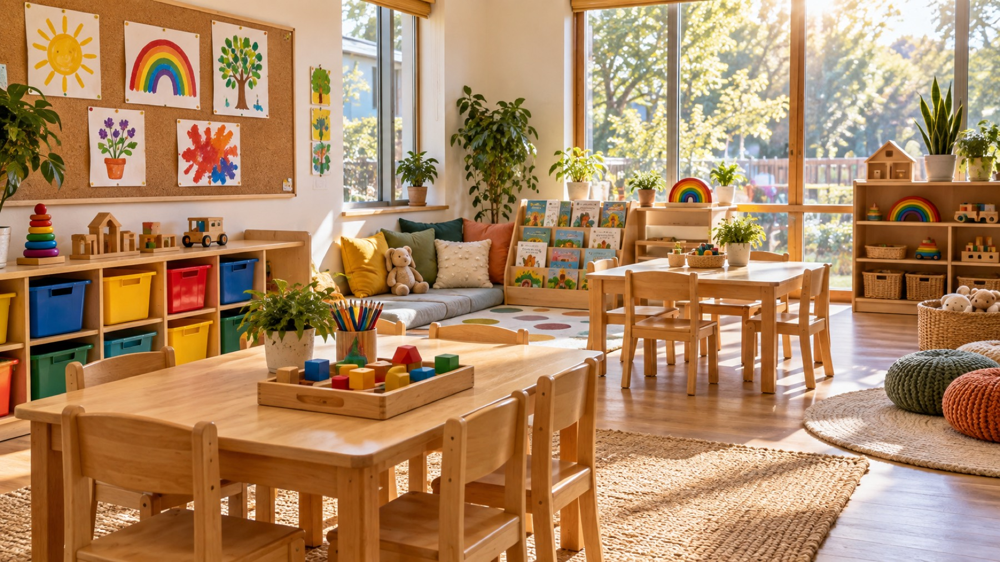

Family owned in Liberty Lake since 1995
A family-run, state-licensed child care center for children from one month to 12 years, open Monday through Friday from 6 am for working families. Early Achievers Quality Level 3.
Infants, toddlers, two-year-olds, preschool, pre-kindergarten and a school-age room, so every child is with kids their own age.
Run by sisters Fawn Dunn and Heather Lance since the family bought the center in July 1995. Fawn has worked in child care since 1983.
A full Washington State child care license (PL-22608) and a Level 3 ranking in the state's Early Achievers quality program.
Our classrooms
Children move through age-based classrooms as they grow, each with its own daily schedule. Availability varies by class, so please contact us for current openings.
1 month to 1 year.
1 to 2 years, with a daily report home for every child.
Their own room and their own daily schedule.
2½ to 4 years (potty-trained).
4 to 5 years, depending on when they start kindergarten.
5 to 12 years, before and after school.
Licensed by the Washington State Department of Children, Youth & Families, license PL-22608 (full license, licensed capacity 104). We participate in Early Achievers with a Level 3 ranking and accept state child care subsidy.
About us
Meadow Wood Children's Center is a family owned and operated licensed childcare center in beautiful Liberty Lake, Washington. We provide care for children from one month to 12 years of age.
Our family bought the center in July of 1995. Director Fawn Dunn has worked in child care since 1983, and her younger sister Heather Lance began her career here when the family took over. In 2009 we moved into a new building about half a mile from the original location, with a large fenced playground.
We participate in Early Achievers through the Washington State Department of Children, Youth & Families and hold a Level 3 ranking.
Our philosophy
We believe the early years are the most important in a child's life. We therefore provide as stimulating an environment as possible during these critical years and throughout the following years.
We also believe all children can succeed if provided a secure, caring environment where they enjoy learning. We are sincerely dedicated to enhancing the lives of the children in our center.
For parents
Enrollment forms, classroom photos and Early Achievers information are available from the office. Call or email and we will send you what you need.
Reviews
“Their communication is excellent, and they truly work alongside parents. They have shown my family so much grace and support over the years, and I will never forget it.”
“Took my daughter here for years, very well run, they care about the kids and their education. You won't find a place that is more engaged, more active with the kids or more structured to set your child up for success.”
“We have 3 children at MWCC and have truly seen growth and development in our girls. The staff always seems engaged with the children. My girls love going to "school"”
Hours & tours
| Monday | 6:00 am – 6:00 pm |
|---|---|
| Tuesday | 6:00 am – 6:00 pm |
| Wednesday | 6:00 am – 6:00 pm |
| Thursday | 6:00 am – 6:00 pm |
| Friday | 6:00 am – 6:00 pm |
| Saturday | Closed |
| Sunday | Closed |
Hours as listed on Google and the state licensing record. Call (509) 924-6223 to schedule a tour.
Meadow Wood Children's Center
2224 N Swing Ln, Liberty Lake, WA 99019
Call to schedule a tour and ask about current openings. Availability varies by classroom.
Call to schedule a tour